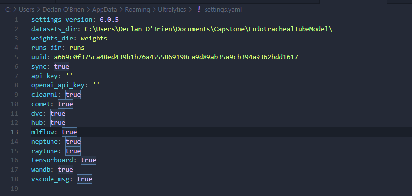
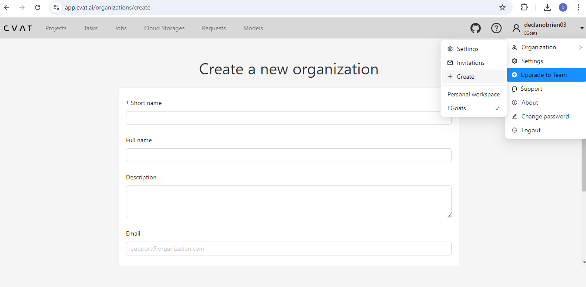
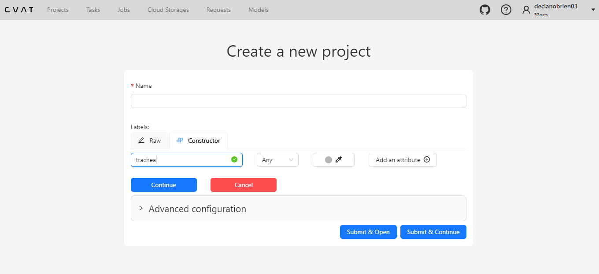
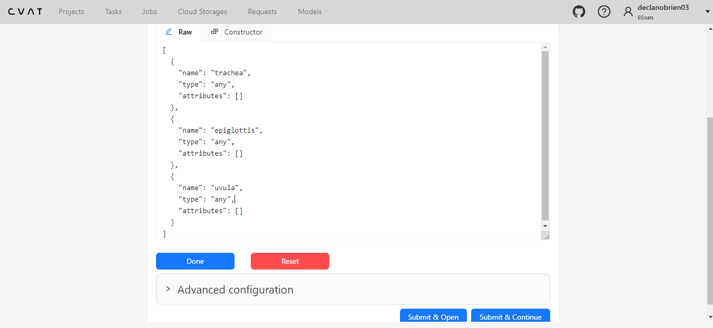

When using git commands (add, commit, push, pull, fetch, clone, etc) with large changes (datasets, model files), it is recommended break up into multiple commits and to use --verbose to track the progress because it usually takes a long time.
pip install -r requirements.txtpip install -r dev-requirements.txtpipreqs . --forceEnsure that in your AppData/Roaming/Ultralytics/settings.yaml file, the value of the datasets_dir ends with this main project repo, like this: datasets_dir: C:\Users\Declan O'Brien\Documents\Capstone\EndotrachealTubeModel

Trains a model based on a current version of a model and a specific dataset while maintaining a record of model versioning.
python train.py --model_name <model_name> --dataset_name <dataset_name> --run_number <run_number>Validates the model on a specific dataset while maintaining a record of testing history.
python test.py --model_name <model_name> --dataset_name <dataset_name> --run_number <run_number>--model_name (required):runs/detect/ directory containing the model file to test.train3--dataset_name (required):datasets/ directory containing the dataset to use for testing.90258_001--run_number (required):valN).1Logging: After testing, the script logs the details of the test run into a CSV file named test_history.csv.
Runs the model through a video, predicting the locations of features in the video. There is the option to playback the video as it predicts, or save the predicted video to a new file in full_predicted_videos/.
Converts the data format from the downloaded CVAT annotations to the format we need.
Combines multiple datasets into a single dataset folder (combined_dataset) by creating symbolic links to their images and labels. It also generates a data.yaml configuration file for YOLOv8 training or validation.
.gitignore to account for machine-specific file paths. You need to recreate them on different machines by re-running the script.
Combine All Datasets:
python create_combined_dataset.py --for_allAdd a Specific Dataset:
python create_combined_dataset.py --source_folder <source_folder>combined_dataset/
├── training/
│ ├── images/ (symbolic links to images for training from all source datasets)
│ ├── labels/ (symbolic links to labels for training from all source datasets)
├── validation/
│ ├── images/ (symbolic links to images for validation from all source datasets)
│ ├── labels/ (symbolic links to labels for validation from all source datasets)
├── data.yamlAs of 9-16-24, the value of model.names from the most recent model (runs/detect/train3/weights/best.pt) is:
{0: 'trachea', 1: 'epiglottis', 2: 'uvula'}Create an account and organization on CVAT:

When working on this project in CVAT, make sure you are in the correct organization, not "Personal Workspace" or another organization.
Create a new project within this organization. When creating the project, be sure to add the labels: ['trachea', 'epiglottis', 'uvula']. It's important to ensure the order is consistent with the class label numbers (trachea = 0, etc.).


Download the video you want to annotate from the google sheet titled "Video Annotation Progress".
model_versions.csv is automatically updated with the newly trained models after running train.py. This contains the model version name, the previous model trained on, the additional dataset trained on, timestamp, and file path.
test_history.csv is automatically updated with the history of tests after running test.py. This contains the results directory, model version tested, dataset tested on, timestamp, and file path.
EndotrachealTubeModel/
├── datasets/ # Training and testing datasets
├── datasets_exported_from_cvat/ # Raw exports from CVAT
├── runs/ # Training and testing results
│ └── detect/
│ ├── train1/
│ ├── train2/
│ └── val1/
├── full_predicted_videos/ # Output from predict.py
├── images/ # Documentation images
├── train.py
├── test.py
├── predict.py
├── convert_format_and_train_test_split.py
├── create_combined_dataset.py
├── requirements.txt
└── dev-requirements.txtIf you encounter CUDA out of memory errors during training:
If combined dataset creation fails:
| Version | Date | Major Changes |
|---|---|---|
| 1.0 | 9-16-24 | Initial release with trachea, epiglottis, and uvula detection |
For questions or issues related to this project: